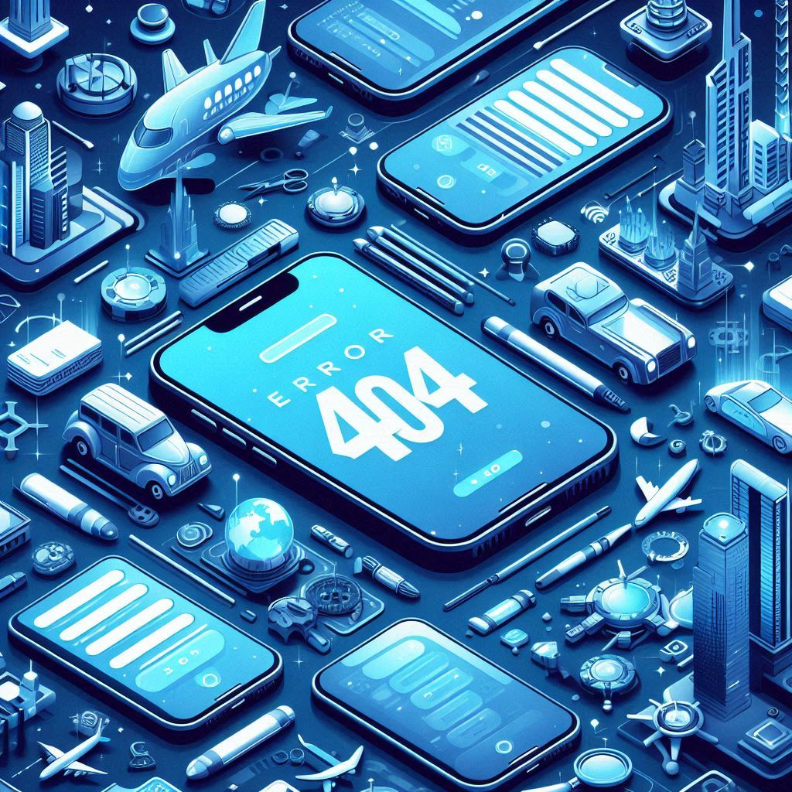

<ion-header>
  <ion-toolbar class="custom-toolbar">
    <ion-buttons slot="start">
      
    </ion-buttons>
    <ion-title class="toolbar-title">MoveGo</ion-title>
  </ion-toolbar>
</ion-header>

<ion-content>
  
</ion-content>
